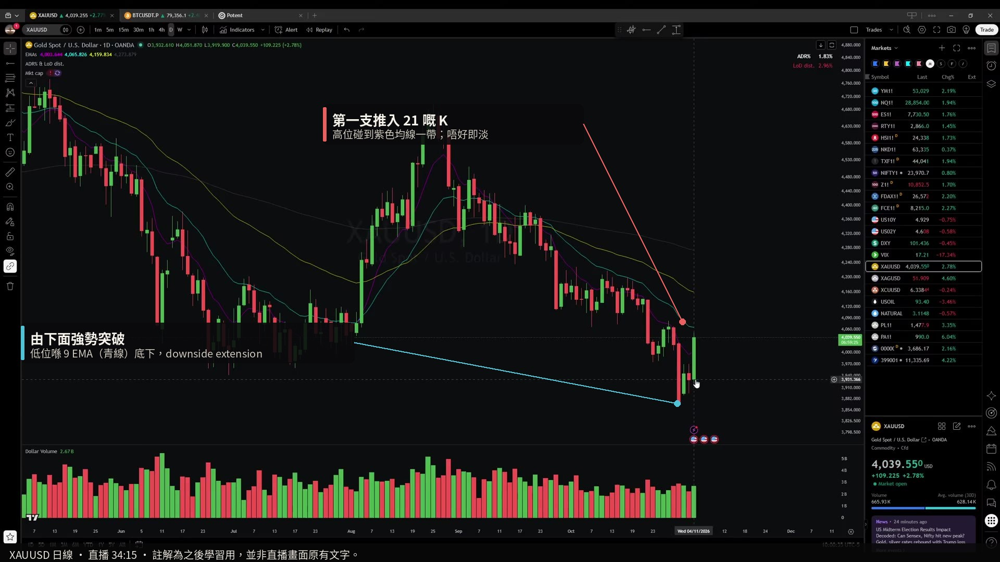
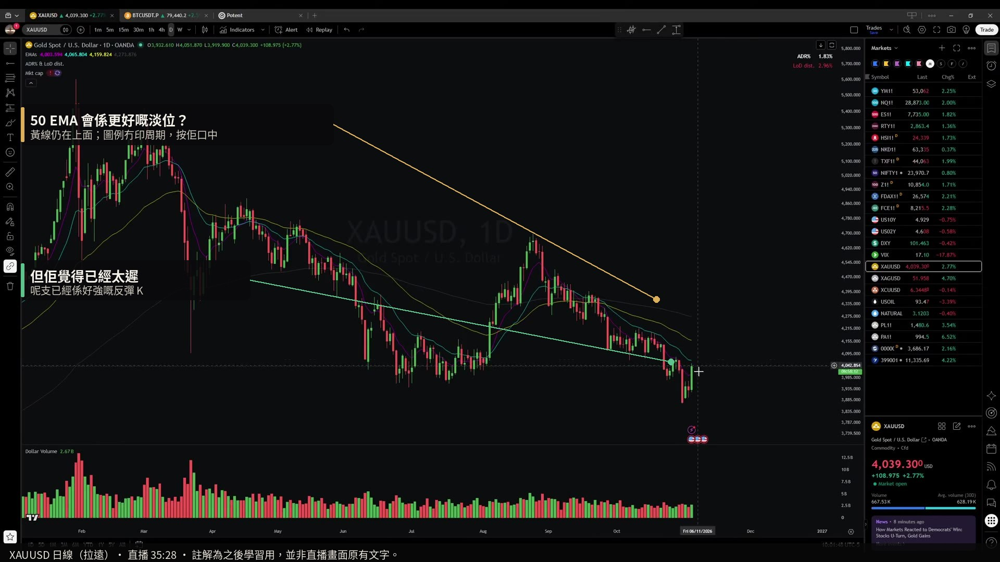

概要
第一次碰到 21，唔等於可以即淡
有觀眾問：日線黃金已經回調到 21 EMA，會唔會考慮做淡？佢明確話「對我嚟講一定唔會」。如果要淡，都想等 21 附近整固幾日，而唔係喺第一支推入 21 嘅 K 就淡——因為呢支係由下面、9 EMA 底下嘅 downside extension 強勢升上來。之後佢話 50 EMA 可能係更好嘅淡位，但已經太遲；市場需要多啲時間整固，先決定下一個方向同 range expansion。講「好強嘅反彈」嗰陣，畫面仍然係黃金，唔係 QQQ。
圖一 · 主圖
XAUUSD 日線：第一支推入 21，唔好即淡
直播 34:15

原話
On daily time frame gold is having pulled back to 21 EMA, would you consider that short entry? Like for me definitely not. Like if I would like to short, I think if I have to, I would wait for maybe a couple of days' consolidation near the 21, instead of shorting at the first candle pushing into the 21, given like this is a really strong candle, this breaking out from way down here like below the 9 EMA, and then just from a downside extension.
日線黃金已經回調到 21 EMA，會唔會考慮呢個淡倉入場？對我嚟講一定唔會。如果我要淡，都會等 21 附近或者整固幾日，而唔係喺第一支推入 21 嘅 K 就淡。因為呢支其實係好強嘅 K，由好下面、9 EMA 底下，即係 downside extension 升上來。
點樣讀
圖例紫色約 4065.8、青色約 4003.6，冇印周期。高位約 4051 已經碰到紫色一帶，低位 3919 曾經低過青線。註解按佢口中「21 / 9」標位置，唔把彩線周期寫死喺圖例上。
要學嘅係：碰到均線唔等於即刻反向開倉；呢支係由伸延低位強勢升上來嘅第一支，所以佢寧願等整固。
圖二
拉遠之後：50 EMA 可能更好，但已經太遲
直播 35:28

原話
Right now I think the 50 EMA would be the better one to short, but I think it's too late. I think the market needs a little bit more time to consolidate and then to decide the next direction, the next range expansion. I think right now we are getting in a pretty strong bounce.
而家我覺得 50 EMA 會係更好嘅淡位，但我覺得已經太遲。市場需要多啲時間去整固，然後先決定下一個方向、下一次 range expansion。我覺得而家我哋係處於一波頗強嘅反彈入面。
點樣讀
35:00–35:06 畫面喺黃金日線同週線之間切換，之後拉遠日線；到 35:29 講完「pretty strong bounce」仍然未切到 QQQ。所以「好強嘅反彈」係講緊黃金／呢段市況，唔好誤用成 35:30 嘅其他品種圖。
YouTube 自動字幕把「50 EMA」聽成「15 year maybe」。兩個 Whisper 版本都係 50 EMA，而拉遠日線上面仍然見到黃線。本頁跟 Whisper 同畫面，並把字幕分歧寫喺附註。
「更好嘅淡位」後面立刻係「太遲」，唔好把呢句讀成而家先至去淡 50 EMA。
附註
注意事項
- 圖上中文註解係之後加上嘅學習說明，唔係直播畫面原本已有嘅字。可用「原畫面」對返未加字嘅截圖。
- 畫面睇唔到成交價、倉位大細或者損益，所以本頁唔寫死呢啲數字。
- 圖例多數只有顏色同數值，冇印均線周期。本頁唔會把某條彩線寫死成某個周期；如果佢有講周期，只標「佢口中嘅位置就喺呢附近」。
- 原話來自機器轉寫（faster-whisper large-v3-turbo，並對照 YouTube 自動英文字幕），並非逐字人工校對。標點為閱讀而加。 呢段「50 EMA」同 YouTube「15 year maybe」唔一致，本頁按 Whisper 同拉遠日線跟 50 EMA。
- 35:29 之後畫面先轉天然氣／YM 等，唔算入呢科。
- 本頁只拆黃金呢條問答（約 33:29–35:29），冇混入其他系統或者規則。